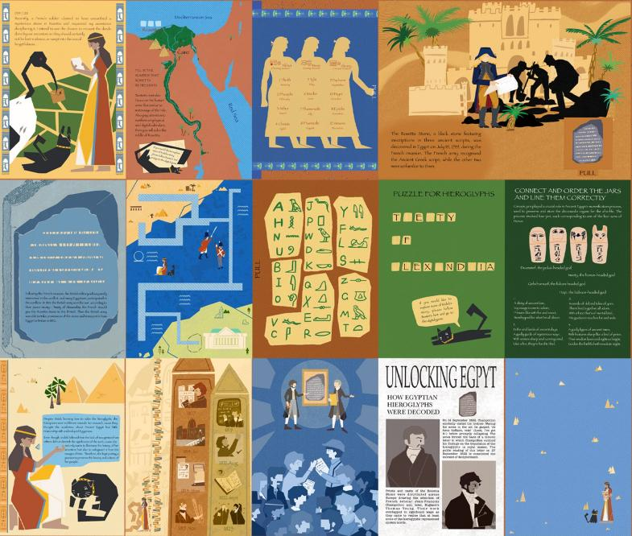
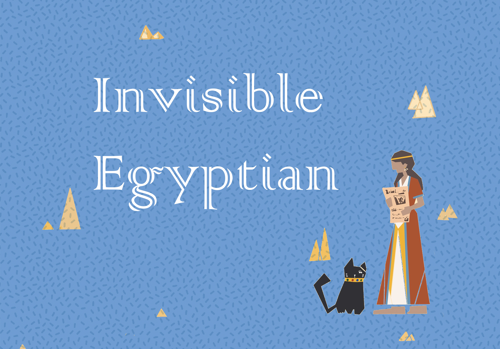
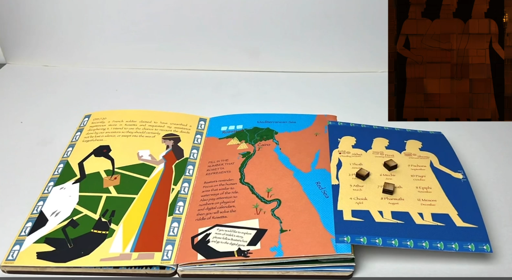
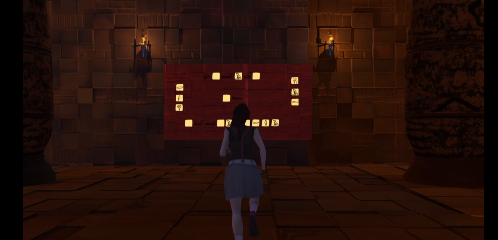
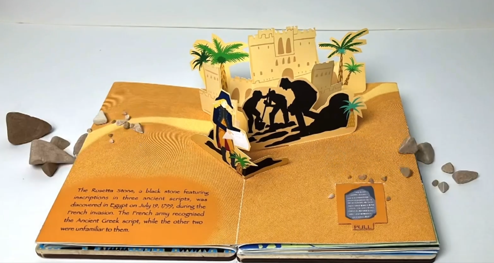

Invisible Egyptian
A cross-medium puzzle: half the answers live on screen, the other half in a book you hold.
About
Invisible Egyptian is a cross-medium puzzle game in which a digital game and a physical printed journal must be used together. You play Malek, an Egyptian archaeologist exploring an ancient tomb, deciphering hieroglyphs to uncover its secrets — and many of the answers live not on the screen, but in a companion book you hold in your hands.
The design deliberately pushes the puzzle off the screen: clues in the game point you to pages in the printed journal, and discoveries in the journal feed back into the game. The two halves are meaningless apart and only complete each other — the act of flipping through a real book becomes part of solving the tomb.
Invisible Egyptian was made over 10 weeks by a six-person multidisciplinary team spanning game design, animation, and history. I led the digital game design, designed the physical companion book, and coordinated its printing.
Design Highlights
- Cross-medium by design — the screen and a printed journal must be used together; neither half can be solved alone.
- Puzzles that leave the screen — in-game clues send you into a real book, and what you find there feeds back into the game.
- Story-rich archaeology — a historical narrative about Egyptian hieroglyphs threads through every puzzle.
- Multidisciplinary student project — built in 10 weeks by a six-person team across game design, animation, and history.
Photos




